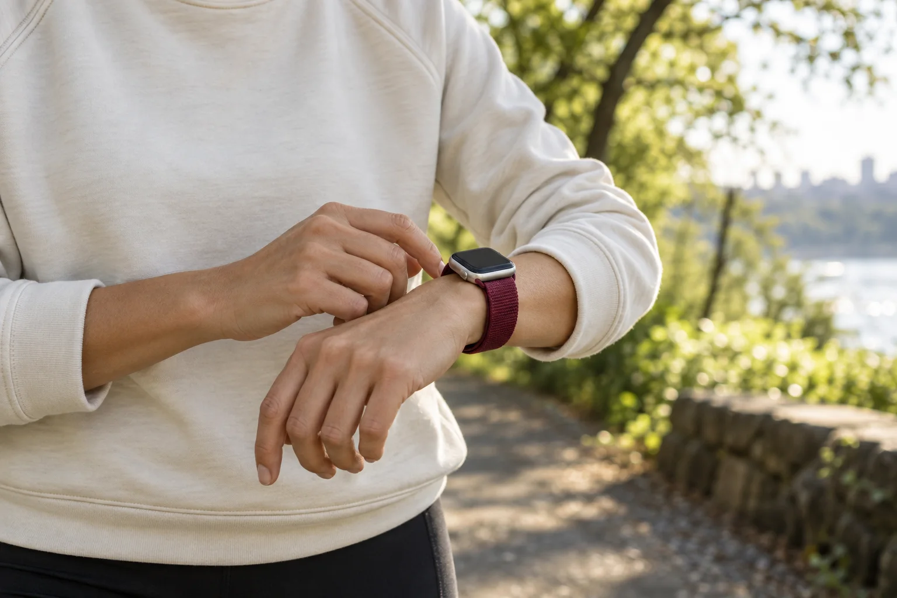
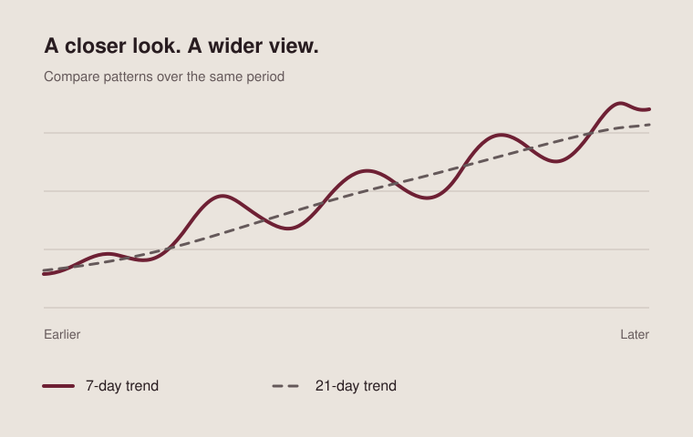

Aorta Know
Get to know your patterns.
See the health and activity your Apple Watch records, with readings, workouts, and your own notes together on iPhone.
Explore the patternsA little more context, day by day.
Your day, in context
A clearer view of the everyday.
Daily summaries bring recent progress and longer-term trends into one calm view.
A morning briefing gathers key information for the day ahead. Fitness updates and a habit tracker help you notice how your routines are taking shape.
Heart & activity
More than a moment.
Follow heart rate through waking hours, daily activity, stillness, sleep, and workouts.
Explore heart rate, heart rate variability, blood pressure, blood glucose, blood oxygen, and detailed ECG analysis.
Add a note to an individual heart reading, or see background heart rate alerts from Apple Watch alongside the context around them.
Movement that fits you
Build on your own rhythm.
Move, distance, and step goals adapt to your current activity patterns, with daily progress forecasts to help you plan.
Workout heart rate, training summaries, GPS maps, and trends let you look back at each session. Choose a training zone for custom heart rate alerts in the Watch workout app, and stream workout information from Watch to iPhone as you go.

A place for your notes
Remember what was happening.
Keep a daily journal of notes, measurements, and workouts, entered on iPhone or Apple Watch.
Record blood pressure, temperature, glucose, weight, waist circumference, and body fat percentage. A detailed entry list keeps the small details close to the bigger picture.
The longer view
Patterns take time.
Explore more than 30 metrics across six weeks to 12 months.
See 7-day and 21-day trends for any metric, or overlay metrics to compare how they move together. Export health metrics and workouts to review or share with a health professional.

Getting started
Aorta Know requires an iPhone with the Health app installed. Heart readings come from the Health data store, which is ideally populated by Apple Watch.